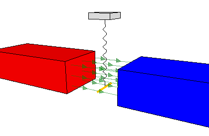

This program simulates the force exerted by a magnetic field between two magnets on an electrical current trough a wire.
The wire is suspended on a spring and will oscillate when the battery (whichis connected to the ends of the wire) is turned on and off, the angle of the wire with respect to the magnetic field is changed, or the poles of themagnets are switched.
